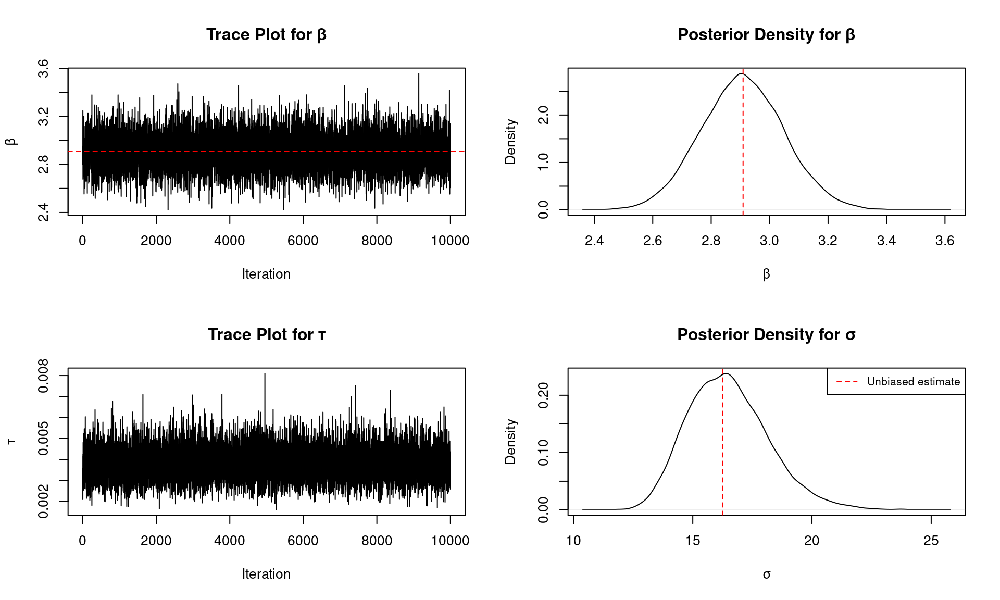
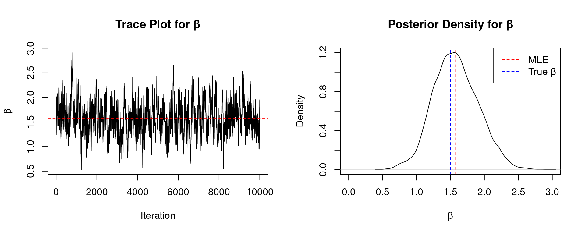

Code
library(rms)
library(ggplot2)
library(plotly)
library(brms)
library(tidyverse)
library(coda)
library(MASS)
library(truncnorm)
library(knitr)
library(kableExtra)February 16, 2026
library(rms)
library(ggplot2)
library(plotly)
library(brms)
library(tidyverse)
library(coda)
library(MASS)
library(truncnorm)
library(knitr)
library(kableExtra)These notes provide a comparison of Frequentist Estimation and Bayesian Inference approaches to regression modeling. This material is presented as one of the final lectures before the exam and builds upon foundational concepts covered in earlier course materials.
Prerequisites: Before working through these notes, we will first review Model Estimation (Set2.pdf), which covers key concepts in simple linear regression and details on estimation from a frequentist standpoint. That material provides a review of many applied concepts already discussed (and thus serves as a review for the midterm exam) and is the foundation for understanding the comparisons presented here.
Scope and Purpose: These following notes present mathematical derivations and theoretical foundations to provide clarity and deeper understanding of both approaches. The derivations demonstrate in linear and logistic regression
How maximum likelihood estimation works
How Bayesian posterior distributions are derived
The relationship between different estimation methods
The underlying theory behind the functions you use in practice
Important Note on Exam Coverage:
The exam focuses on applied data analysis. While the mathematical derivations in these notes are provided for clarity and understanding, in this course you are NOT be asked to:
Derive posterior distributions
Maximize likelihood functions by hand
Perform calculus-based derivations
These derivation skills are the purview of other courses. For this course, you should focus on:
Understanding the conceptual differences between approaches
Knowing when to use each method
Applying the methods using R (lm(), glm(), brms(), etc.)
Interpreting and communicating results
We consider a simplified linear regression model with only a slope parameter (no intercept) with \(X_i\) fixed. This model takes the form:
\[Y_i = \beta X_i + \varepsilon_i\]
where \(\varepsilon_i \sim N(0, \sigma^2)\) for the likelihood-based approach.
Important Note: This model forces the regression line through the origin \((0,0)\). While mathematically simpler (reducing the parameter space), this constraint is often not scientifically useful. Even if we expect \(Y=0\) when \(X=0\), this point may lie outside the range of our data and assumes linearity, making the constraint arbitrary and potentially misleading.
The maximum likelihood approach assumes conditional normality of the residuals. Given \(Y_i \sim N(\beta X_i, \sigma^2)\), the likelihood function is:
\[L(\beta, \sigma^2 | \mathbf{y}, \mathbf{x}) = \prod_{i=1}^n \frac{1}{\sqrt{2\pi\sigma^2}} \exp\left(-\frac{(y_i - \beta x_i)^2}{2\sigma^2}\right)\]
The log-likelihood is:
\[\ell(\beta, \sigma^2) = -\frac{n}{2}\log(2\pi) - \frac{n}{2}\log(\sigma^2) - \frac{1}{2\sigma^2}\sum_{i=1}^n(y_i - \beta x_i)^2\]
Deriving the MLE for \(\beta\):
Taking the derivative with respect to \(\beta\) and setting equal to zero:
\[\frac{\partial \ell}{\partial \beta} = \frac{1}{\sigma^2}\sum_{i=1}^n x_i(y_i - \beta x_i) = 0\]
\[\sum_{i=1}^n x_i y_i - \beta \sum_{i=1}^n x_i^2 = 0\]
\[\hat{\beta}_{MLE} = \frac{\sum_{i=1}^n x_i y_i}{\sum_{i=1}^n x_i^2}\]
Deriving the MLE for \(\sigma^2\):
Taking the derivative with respect to \(\sigma^2\):
\[\frac{\partial \ell}{\partial \sigma^2} = -\frac{n}{2\sigma^2} + \frac{1}{2\sigma^4}\sum_{i=1}^n(y_i - \beta x_i)^2 = 0\]
\[\hat{\sigma}^2_{MLE} = \frac{1}{n}\sum_{i=1}^n(y_i - \hat{\beta} x_i)^2\]
The Fisher Information matrix provides the asymptotic variance of the MLE. For our model:
\[I(\beta, \sigma^2) = -E\left[\frac{\partial^2 \ell}{\partial \theta \partial \theta^T}\right]\]
The second derivatives are:
\[\frac{\partial^2 \ell}{\partial \beta^2} = -\frac{1}{\sigma^2}\sum_{i=1}^n x_i^2\]
\[\frac{\partial^2 \ell}{\partial (\sigma^2)^2} = \frac{n}{2\sigma^4} - \frac{1}{\sigma^6}\sum_{i=1}^n(y_i - \beta x_i)^2\]
\[\frac{\partial^2 \ell}{\partial \beta \partial \sigma^2} = -\frac{1}{\sigma^4}\sum_{i=1}^n x_i(y_i - \beta x_i)\]
Taking expectations (where \(E[(y_i - \beta x_i)^2] = \sigma^2\) and \(E[y_i - \beta x_i] = 0\)):
\[I(\beta) = \frac{1}{\sigma^2}\sum_{i=1}^n x_i^2\]
Therefore, the asymptotic variance is:
\[\text{Var}(\hat{\beta}) = \frac{\sigma^2}{\sum_{i=1}^n x_i^2}\]
\[SE(\hat{\beta}) = \frac{\sigma}{\sqrt{\sum_{i=1}^n x_i^2}}\]
In practice, we substitute \(\hat{\sigma}\) for \(\sigma\).
Important Note on Bias: The MLE estimate of \(\sigma^2\) is:
\[\hat{\sigma}^2_{MLE} = \frac{1}{n}\sum_{i=1}^n(y_i - \hat{\beta} x_i)^2\]
This estimator is biased because it uses \(n\) in the denominator rather than the degrees of freedom \((n-1)\). The MLE is asymptotically unbiased but has finite-sample bias. To obtain an unbiased estimator of \(\sigma^2\), we use:
\[\hat{\sigma}^2_{unbiased} = \frac{1}{n-1}\sum_{i=1}^n(y_i - \hat{\beta} x_i)^2\]
The correction factor is \(\frac{n}{n-1}\), so:
\[\hat{\sigma}_{unbiased} = \sqrt{\frac{n}{n-1}} \cdot \hat{\sigma}_{MLE}\]
When calculating the standard error of \(\hat{\beta}\), using the unbiased estimator ensures:
\[SE(\hat{\beta}) = \frac{\hat{\sigma}_{unbiased}}{\sqrt{\sum_{i=1}^n x_i^2}} = \frac{\sqrt{\frac{1}{n-1}\sum_{i=1}^n(y_i - \hat{\beta} x_i)^2}}{\sqrt{\sum_{i=1}^n x_i^2}}\]
This matches the standard error reported by lm() exactly.
We can also derive the standard error directly from the formula for \(\hat{\beta}\):
\[\hat{\beta} = \frac{\sum_{i=1}^n x_i Y_i}{\sum_{i=1}^n x_i^2}\]
Since \(Y_i = \beta x_i + \varepsilon_i\) where \(\varepsilon_i \sim N(0, \sigma^2)\) independently:
\[\text{Var}(\hat{\beta}) = \text{Var}\left(\frac{\sum_{i=1}^n x_i Y_i}{\sum_{i=1}^n x_i^2}\right) = \frac{1}{(\sum_{i=1}^n x_i^2)^2} \text{Var}\left(\sum_{i=1}^n x_i Y_i\right)\]
Since the \(Y_i\) are independent:
\[\text{Var}\left(\sum_{i=1}^n x_i Y_i\right) = \sum_{i=1}^n x_i^2 \text{Var}(Y_i) = \sum_{i=1}^n x_i^2 \sigma^2 = \sigma^2 \sum_{i=1}^n x_i^2\]
Therefore:
\[\text{Var}(\hat{\beta}) = \frac{\sigma^2 \sum_{i=1}^n x_i^2}{(\sum_{i=1}^n x_i^2)^2} = \frac{\sigma^2}{\sum_{i=1}^n x_i^2}\]
This confirms our Fisher Information result.
The least squares approach minimizes the residual sum of squares without assuming normality. We minimize:
\[RSS(\beta) = \sum_{i=1}^n (y_i - \beta x_i)^2\]
Taking the derivative and setting to zero:
\[\frac{\partial RSS}{\partial \beta} = -2\sum_{i=1}^n x_i(y_i - \beta x_i) = 0\]
\[\hat{\beta}_{LS} = \frac{\sum_{i=1}^n x_i y_i}{\sum_{i=1}^n x_i^2}\]
Note that \(\hat{\beta}_{LS} = \hat{\beta}_{MLE}\) even though the least squares approach does not require the normality assumption. The normality assumption is only needed for inference (standard errors, confidence intervals, hypothesis tests) in small samples, though large-sample inference can rely on asymptotic normality via the Central Limit Theorem.
We’ll use the cars dataset in R, which contains speed and stopping distance for cars.
# Load and prepare data
data(cars)
# We'll model distance as a function of speed with no intercept
y <- cars$dist
x <- cars$speed
# Calculate estimates
beta_hat <- sum(x * y) / sum(x^2)
n <- length(y)
residuals <- y - beta_hat * x
RSS <- sum(residuals^2)
# MLE estimate of sigma (biased)
sigma_hat_mle <- sqrt(RSS / n)
# Unbiased estimate of sigma
sigma_hat_unbiased <- sqrt(RSS / (n - 1))
# Correction factor
correction_factor <- sqrt(n / (n - 1))
# Create comparison table
comparison_df <- data.frame(
Estimate = c("β̂", "σ̂ (MLE)", "σ̂ (unbiased)", "Correction factor", "SE(β̂) using MLE σ", "SE(β̂) using unbiased σ"),
Value = c(
round(beta_hat, 4),
round(sigma_hat_mle, 4),
round(sigma_hat_unbiased, 4),
round(correction_factor, 4),
round(sigma_hat_mle / sqrt(sum(x^2)), 4),
round(sigma_hat_unbiased / sqrt(sum(x^2)), 4)
)
)
kable(comparison_df, caption = "Manual Calculation Results", align = 'll', format='html') %>%
kable_styling(bootstrap_options = c("striped", "hover"))| Estimate | Value |
|---|---|
| β̂ | 2.9091 |
| σ̂ (MLE) | 16.0958 |
| σ̂ (unbiased) | 16.2592 |
| Correction factor | 1.0102 |
| SE(β̂) using MLE σ | 0.1399 |
| SE(β̂) using unbiased σ | 0.1414 |
Now we’ll create a 3D plot showing the likelihood function as a function of \(\beta\) and \(\sigma\):
# Make sure beta_hat and sigma_hat_mle are on the grid
beta_grid <- sort(unique(c(seq(beta_hat - 0.5, beta_hat + 0.5, length.out = 50), beta_hat)))
sigma_grid <- sort(unique(c(seq(max(1, sigma_hat_unbiased - 5), sigma_hat_unbiased + 5, length.out = 50), sigma_hat_mle)))
# Compute log-likelihood
log_lik <- outer(beta_grid, sigma_grid, Vectorize(function(beta, sigma) {
res <- y - beta * x
n <- length(y)
-n/2 * log(2*pi) - n * log(sigma) - sum(res^2)/(2*sigma^2)
}))
# Relative likelihood (max = 1 at MLE on the grid)
likelihood <- exp(log_lik - max(log_lik))
# Relative likelihood values at the two sigma points with beta fixed at beta_hat
rel_at <- function(beta0, sigma0) {
res <- y - beta0 * x
n <- length(y)
ll <- -n/2 * log(2*pi) - n * log(sigma0) - sum(res^2)/(2*sigma0^2)
exp(ll - max(log_lik))
}
z_mle <- rel_at(beta_hat, sigma_hat_mle)
z_unbiased <- rel_at(beta_hat, sigma_hat_unbiased)
plot_ly(x = ~sigma_grid, y = ~beta_grid, z = ~likelihood) %>%
add_surface() %>%
add_markers(x = sigma_hat_mle, y = beta_hat, z = z_mle,
marker = list(size = 5, color = 'red'),
name = 'MLE (σ)') %>%
add_markers(x = sigma_hat_unbiased, y = beta_hat, z = z_unbiased,
marker = list(size = 5, color = 'blue'),
name = 'Unbiased (σ)') %>%
layout(scene = list(
xaxis = list(title = 'σ'),
yaxis = list(title = 'β'),
zaxis = list(title = 'Relative Likelihood')
))The red point shows the MLE estimate \((\hat{\beta}, \hat{\sigma}_{MLE})\), which corresponds to the maximum of the likelihood function. The blue point shows \((\hat{\beta}, \hat{\sigma}_{unbiased})\), which uses the degrees-of-freedom correction. Note that \(\hat{\beta}\) is the same for both (it maximizes the likelihood), but the unbiased estimator of \(\sigma\) is slightly larger.
Now let’s verify our results using R’s built-in lm() function:
# Fit model with lm (forcing through origin with -1)
model_lm <- lm(dist ~ speed - 1, data = cars)
# Create comparison table
comparison_lm <- data.frame(
Estimate = c("β̂", "SE(β̂)"),
Manual = c(round(beta_hat, 4), round(sigma_hat_unbiased / sqrt(sum(x^2)), 4)),
`lm()` = c(round(coef(model_lm)[1], 4), round(summary(model_lm)$coefficients[1, 2], 4)),
check.names = FALSE
)
kable(comparison_lm, caption = "Comparison: Manual Calculation vs lm()", align = 'lrr', format='html') %>%
kable_styling(bootstrap_options = c("striped", "hover"))| Estimate | Manual | lm() | |
|---|---|---|---|
| speed | β̂ | 2.9091 | 2.9091 |
| SE(β̂) | 0.1414 | 0.1414 |
The estimates match perfectly, confirming our derivations.
For the Bayesian approach, we use conditionally conjugate priors. Let \(\tau = 1/\sigma^2\) denote the precision. We specify:
Prior for \(\beta\): \(\beta \sim N(\mu_0, 1/\tau_0)\)
Prior for \(\tau\): \(\tau \sim \text{Gamma}(\alpha_0, \beta_0)\)
These priors are conditionally conjugate, meaning each complete conditional distribution has a recognizable form.
Complete Conditional for \(\beta\):
The likelihood contribution is: \[p(\mathbf{y}|\beta, \tau) \propto \exp\left(-\frac{\tau}{2}\sum_{i=1}^n(y_i - \beta x_i)^2\right)\]
The prior is: \[p(\beta) \propto \exp\left(-\frac{\tau_0}{2}(\beta - \mu_0)^2\right)\]
The posterior (using kernel recognition) is: \[p(\beta | \mathbf{y}, \tau) \propto \exp\left(-\frac{1}{2}\left[\tau\sum_{i=1}^n(y_i - \beta x_i)^2 + \tau_0(\beta - \mu_0)^2\right]\right)\]
Kernel recognition is a technique for identifying probability distributions from their unnormalized forms. The key insight is that we can recognize a distribution by its “kernel”—the part that depends on the parameter of interest, ignoring normalizing constants.
For a probability density \(p(\theta)\), we can write:
\[p(\theta) = \frac{1}{c} \times k(\theta)\]
where:
\(k(\theta)\) is the kernel (the part depending on \(\theta\))
\(c\) is the normalizing constant (makes the integral/sum equal 1)
In Bayesian inference, we compute:
\[p(\theta | \text{data}) \propto p(\text{data} | \theta) \times p(\theta)\]
The \(\propto\) symbol means “proportional to”—we ignore constants that don’t depend on \(\theta\). If we can recognize the resulting kernel as belonging to a known distribution family, we’ve identified the posterior.
Normal Distribution: \(N(\mu, \sigma^2)\)
Kernel: \(\exp\left(-\frac{1}{2\sigma^2}(x - \mu)^2\right)\)
Key pattern: Quadratic in the exponent \[\exp\left(-\frac{1}{2}[\text{constant} \times \theta^2 - 2 \times \text{constant} \times \theta]\right)\]
Gamma Distribution: \(\text{Gamma}(\alpha, \beta)\)
Kernel: \(x^{\alpha-1} e^{-\beta x}\)
Key pattern: Power times exponential
Beta Distribution: \(\text{Beta}(\alpha, \beta)\)
Kernel: \(x^{\alpha-1}(1-x)^{\beta-1}\)
Key pattern: Product of powers
Suppose we have:
Data: \(y_i \sim N(\theta, \sigma^2)\) with known \(\sigma^2\)
Prior: \(\theta \sim N(\mu_0, \tau_0^2)\)
The posterior is: \[p(\theta | \mathbf{y}) \propto \exp\left(-\frac{1}{2\sigma^2}\sum(y_i - \theta)^2\right) \times \exp\left(-\frac{1}{2\tau_0^2}(\theta - \mu_0)^2\right)\]
Step 1: Expand and combine exponents: \[\propto \exp\left(-\frac{1}{2}\left[\frac{n}{\sigma^2}\theta^2 - \frac{2\sum y_i}{\sigma^2}\theta + \frac{1}{\tau_0^2}\theta^2 - \frac{2\mu_0}{\tau_0^2}\theta\right]\right)\]
Step 2: Collect terms: \[\propto \exp\left(-\frac{1}{2}\left[\left(\frac{n}{\sigma^2} + \frac{1}{\tau_0^2}\right)\theta^2 - 2\left(\frac{\sum y_i}{\sigma^2} + \frac{\mu_0}{\tau_0^2}\right)\theta\right]\right)\]
Step 3: Recognize the pattern \(\exp(-\frac{1}{2}[A\theta^2 - 2B\theta])\) as Normal with:
Precision: \(\tau_n = \frac{n}{\sigma^2} + \frac{1}{\tau_0^2}\)
Mean: \(\mu_n = \frac{B}{A} = \frac{\sum y_i/\sigma^2 + \mu_0/\tau_0^2}{n/\sigma^2 + 1/\tau_0^2}\)
Therefore: \(\theta | \mathbf{y} \sim N(\mu_n, 1/\tau_n)\)
For normal kernels, we often need to complete the square:
Starting with: \(A\theta^2 - 2B\theta + C\)
Rewrite as: \(A(\theta - B/A)^2 + \text{constant}\)
The constant doesn’t depend on \(\theta\), so we can ignore it! This reveals:
Mean: \(\mu = B/A\)
Variance: \(\sigma^2 = 1/A\)
The normalizing constant ensures the distribution integrates to 1, but it’s the same for any value of the data. Since we’re conditioning on the observed data, the normalizing constant is just a number that makes the probabilities sum/integrate to 1. We can figure out what distribution we have without computing it!
This technique is powerful because it lets us derive closed-form posteriors without doing any integration!
Expanding and completing the square: \[\tau\sum_{i=1}^n(y_i - \beta x_i)^2 + \tau_0(\beta - \mu_0)^2 = (\tau\sum x_i^2 + \tau_0)\beta^2 - 2\beta(\tau\sum x_i y_i + \tau_0\mu_0) + C\]
This is the kernel of a normal distribution: \[\beta | \mathbf{y}, \tau \sim N\left(\frac{\tau\sum x_i y_i + \tau_0\mu_0}{\tau\sum x_i^2 + \tau_0}, \frac{1}{\tau\sum x_i^2 + \tau_0}\right)\]
Let \(\tau_n = \tau\sum x_i^2 + \tau_0\) and \(\mu_n = \frac{\tau\sum x_i y_i + \tau_0\mu_0}{\tau_n}\).
Complete Conditional for \(\tau\):
The likelihood contribution is: \[p(\mathbf{y}|\beta, \tau) \propto \tau^{n/2} \exp\left(-\frac{\tau}{2}\sum_{i=1}^n(y_i - \beta x_i)^2\right)\]
The prior is: \[p(\tau) \propto \tau^{\alpha_0-1} \exp(-\beta_0\tau)\]
The posterior is: \[p(\tau | \mathbf{y}, \beta) \propto \tau^{n/2 + \alpha_0 - 1} \exp\left(-\tau\left[\frac{1}{2}\sum_{i=1}^n(y_i - \beta x_i)^2 + \beta_0\right]\right)\]
This is the kernel of a Gamma distribution: \[\tau | \mathbf{y}, \beta \sim \text{Gamma}\left(\alpha_0 + \frac{n}{2}, \beta_0 + \frac{1}{2}\sum_{i=1}^n(y_i - \beta x_i)^2\right)\]
Gibbs sampling is a Markov Chain Monte Carlo (MCMC) method that generates samples from a joint posterior distribution by iteratively sampling from complete conditional distributions. The algorithm proceeds as follows:
Initialize \(\beta^{(0)}\) and \(\tau^{(0)}\)
For iteration \(t = 1, 2, \ldots, T\):
Sample \(\beta^{(t)} \sim p(\beta | \mathbf{y}, \tau^{(t-1)})\)
Sample \(\tau^{(t)} \sim p(\tau | \mathbf{y}, \beta^{(t)})\)
Under regularity conditions, the samples \((\beta^{(t)}, \tau^{(t)})\) converge to samples from the joint posterior \(p(\beta, \tau | \mathbf{y})\).
We’ll use diffuse (weakly informative) priors: - \(\beta \sim N(0, 1000)\) (equivalent to \(\tau_0 = 0.001\), \(\mu_0 = 0\)) - \(\tau \sim \text{Gamma}(0.001, 0.001)\) (equivalent to \(\alpha_0 = 0.001\), \(\beta_0 = 0.001\))
# Gibbs sampler function
gibbs_sampler <- function(y, x, n_iter = 10000, burn_in = 1000,
mu0 = 0, tau0 = 0.001, alpha0 = 0.001, beta0 = 0.001) {
# Storage
beta_samples <- numeric(n_iter)
tau_samples <- numeric(n_iter)
# Initialize
beta <- sum(x * y) / sum(x^2) # Start at OLS estimate
tau <- 1
# Precompute
sum_x2 <- sum(x^2)
sum_xy <- sum(x * y)
n <- length(y)
# Gibbs sampling
for (i in 1:n_iter) {
# Sample beta | tau, y
tau_n <- tau * sum_x2 + tau0
mu_n <- (tau * sum_xy + tau0 * mu0) / tau_n
beta <- rnorm(1, mu_n, sqrt(1/tau_n))
# Sample tau | beta, y
residuals <- y - beta * x
alpha_n <- alpha0 + n/2
beta_n <- beta0 + sum(residuals^2)/2
tau <- rgamma(1, alpha_n, beta_n)
# Store
beta_samples[i] <- beta
tau_samples[i] <- tau
}
# Remove burn-in
beta_samples <- beta_samples[-(1:burn_in)]
tau_samples <- tau_samples[-(1:burn_in)]
list(beta = beta_samples, tau = tau_samples, sigma = 1/sqrt(tau_samples))
}
# Run Gibbs sampler
set.seed(123)
gibbs_results <- gibbs_sampler(y, x, n_iter = 11000, burn_in = 1000)par(mfrow = c(2, 2))
# Beta trace plot
plot(gibbs_results$beta, type = 'l', main = 'Trace Plot for β',
xlab = 'Iteration', ylab = 'β')
abline(h = beta_hat, col = 'red', lty = 2)
# Beta density
plot(density(gibbs_results$beta), main = 'Posterior Density for β',
xlab = 'β', ylab = 'Density')
abline(v = beta_hat, col = 'red', lty = 2)
# Tau trace plot
plot(gibbs_results$tau, type = 'l', main = 'Trace Plot for τ',
xlab = 'Iteration', ylab = 'τ')
# Sigma density (more interpretable than tau)
plot(density(gibbs_results$sigma), main = 'Posterior Density for σ',
xlab = 'σ', ylab = 'Density')
abline(v = sigma_hat_unbiased, col = 'red', lty = 2)
legend('topright', 'Unbiased estimate', col = 'red', lty = 2, cex = 0.8)
# Create summary table for Gibbs results
gibbs_summary <- data.frame(
Parameter = rep(c("β", "σ"), each = 4),
Statistic = rep(c("Mean", "Median", "SD", "95% CI"), 2),
Value = c(
round(mean(gibbs_results$beta), 4),
round(median(gibbs_results$beta), 4),
round(sd(gibbs_results$beta), 4),
paste0("(", round(quantile(gibbs_results$beta, 0.025), 4), ", ",
round(quantile(gibbs_results$beta, 0.975), 4), ")"),
round(mean(gibbs_results$sigma), 4),
round(median(gibbs_results$sigma), 4),
round(sd(gibbs_results$sigma), 4),
paste0("(", round(quantile(gibbs_results$sigma, 0.025), 4), ", ",
round(quantile(gibbs_results$sigma, 0.975), 4), ")")
)
)
kable(gibbs_summary, caption = "Posterior Summary from Gibbs Sampling", align = 'llr') %>%
kable_styling(bootstrap_options = c("striped", "hover")) %>%
pack_rows("β", 1, 4) %>%
pack_rows("σ", 5, 8)| Parameter | Statistic | Value |
|---|---|---|
| β | ||
| β | Mean | 2.9079 |
| β | Median | 2.9067 |
| β | SD | 0.1422 |
| β | 95% CI | (2.633, 3.1911) |
| σ | ||
| σ | Mean | 16.4968 |
| σ | Median | 16.3794 |
| σ | SD | 1.7022 |
| σ | 95% CI | (13.5867, 20.2191) |
# Comparison table
comparison_freq_bayes <- data.frame(
Parameter = c("β", "σ"),
`MLE (biased)` = c(round(beta_hat, 4), round(sigma_hat_mle, 4)),
`MLE (unbiased)` = c(round(beta_hat, 4), round(sigma_hat_unbiased, 4)),
`Posterior Mean` = c(round(mean(gibbs_results$beta), 4), round(mean(gibbs_results$sigma), 4)),
check.names = FALSE
)
kable(comparison_freq_bayes, caption = "Comparison: Frequentist vs Bayesian Estimates", align = 'lrrr') %>%
kable_styling(bootstrap_options = c("striped", "hover"))| Parameter | MLE (biased) | MLE (unbiased) | Posterior Mean |
|---|---|---|---|
| β | 2.9091 | 2.9091 | 2.9079 |
| σ | 16.0958 | 16.2592 | 16.4968 |
# Fit model with brms (no intercept)
brms_model <- brm(dist ~ 0 + speed,
data = cars,
prior = c(prior(normal(0, 31.62), class = "b"), # SD = sqrt(1000)
prior(gamma(0.001, 0.001), class = "sigma")),
chains = 4,
iter = 2000,
warmup = 1000,
seed = 123,
refresh = 0)summary(brms_model) Family: gaussian
Links: mu = identity; sigma = identity
Formula: dist ~ 0 + speed
Data: cars (Number of observations: 50)
Draws: 4 chains, each with iter = 2000; warmup = 1000; thin = 1;
total post-warmup draws = 4000
Regression Coefficients:
Estimate Est.Error l-95% CI u-95% CI Rhat Bulk_ESS Tail_ESS
speed 2.91 0.14 2.63 3.19 1.00 2908 2371
Further Distributional Parameters:
Estimate Est.Error l-95% CI u-95% CI Rhat Bulk_ESS Tail_ESS
sigma 16.60 1.78 13.52 20.51 1.00 2981 2518
Draws were sampled using sampling(NUTS). For each parameter, Bulk_ESS
and Tail_ESS are effective sample size measures, and Rhat is the potential
scale reduction factor on split chains (at convergence, Rhat = 1).# Create comparison table
comparison_gibbs_brms <- data.frame(
Method = c("Manual Gibbs", "brms"),
`β (Mean)` = c(round(mean(gibbs_results$beta), 4), round(fixef(brms_model)[1, 1], 4)),
`β (SD)` = c(round(sd(gibbs_results$beta), 4), round(fixef(brms_model)[1, 2], 4)),
check.names = FALSE
)
kable(comparison_gibbs_brms, caption = "Comparison: Manual Gibbs Sampling vs brms", align = 'lrr') %>%
kable_styling(bootstrap_options = c("striped", "hover"))| Method | β (Mean) | β (SD) |
|---|---|---|
| Manual Gibbs | 2.9079 | 0.1422 |
| brms | 2.9108 | 0.1448 |
# Sample for visualization
sample_indices <- sample(length(gibbs_results$beta), 2000)
beta_sample <- gibbs_results$beta[sample_indices]
sigma_sample <- gibbs_results$sigma[sample_indices]
# Create density estimate
library(MASS)
dens <- kde2d(sigma_sample, beta_sample, n = 50)
plot_ly(x = dens$x, y = dens$y, z = dens$z) %>%
add_surface() %>%
add_markers(x = mean(sigma_sample), y = mean(beta_sample), z = max(dens$z),
marker = list(size = 5, color = 'red'),
name = 'Posterior Mean') %>%
layout(scene = list(
xaxis = list(title = 'σ'),
yaxis = list(title = 'β'),
zaxis = list(title = 'Posterior Density'),
camera = list(eye = list(x = 1.5, y = 1.5, z = 1.3))
))Under certain prior specifications that maintain independence between \(\beta\) and \(\tau\), we can derive closed-form marginal posteriors. Specifically, with independent priors where \(p(\beta, \tau) = p(\beta)p(\tau)\), we can integrate out one parameter to obtain marginal distributions.
Marginal for \(\beta\):
If we use an improper uniform prior for \(\beta\) and Jeffrey’s prior for \(\sigma^2\) (i.e., \(p(\beta, \sigma^2) \propto 1/\sigma^2\)), the marginal posterior for \(\beta\) follows a t-distribution:
\[\beta | \mathbf{y} \sim t_{n-1}\left(\hat{\beta}, \frac{\hat{\sigma}^2}{\sum x_i^2}\right)\]
where \(\hat{\beta} = \frac{\sum x_i y_i}{\sum x_i^2}\) and \(\hat{\sigma}^2 = \frac{\sum(y_i - \hat{\beta}x_i)^2}{n-1}\).
Marginal for \(\tau\):
With the same prior structure, after integrating out \(\beta\), the marginal posterior for \(\tau\) is:
\[\tau | \mathbf{y} \sim \text{Gamma}\left(\frac{n-1}{2}, \frac{RSS}{2}\right)\]
where \(RSS = \sum(y_i - \hat{\beta}x_i)^2\).
This special case provides closed-form posteriors but is limited to specific prior choices. The Gibbs sampling approach is more flexible and extends naturally to more complex models.
# Analytical t-distribution for beta
df <- length(y) - 1
scale <- sqrt(sigma_hat_unbiased^2 / sum(x^2))
# Create comparison table
comparison_analytical <- data.frame(
Method = c("Analytical (t-dist)", "Gibbs Sampling"),
Mean = c(round(beta_hat, 4), round(mean(gibbs_results$beta), 4)),
SD = c(round(scale * sqrt(df/(df-2)), 4), round(sd(gibbs_results$beta), 4)),
`95% CI Lower` = c(
round(beta_hat + qt(0.025, df) * scale, 4),
round(quantile(gibbs_results$beta, 0.025), 4)
),
`95% CI Upper` = c(
round(beta_hat + qt(0.975, df) * scale, 4),
round(quantile(gibbs_results$beta, 0.975), 4)
),
check.names = FALSE
)
kable(comparison_analytical, caption = "Comparison: Analytical vs Gibbs Sampling for β", align = 'lrrrr') %>%
kable_styling(bootstrap_options = c("striped", "hover"))| Method | Mean | SD | 95% CI Lower | 95% CI Upper | |
|---|---|---|---|---|---|
| Analytical (t-dist) | 2.9091 | 0.1443 | 2.625 | 3.1932 | |
| 2.5% | Gibbs Sampling | 2.9079 | 0.1422 | 2.633 | 3.1911 |
We now consider logistic regression for binary outcomes. The model is:
\[\log\left(\frac{P(Y_i = 1|X_i)}{1 - P(Y_i = 1|X_i)}\right) = \beta X_i\]
or equivalently:
\[P(Y_i = 1|X_i) = \frac{\exp(\beta X_i)}{1 + \exp(\beta X_i)} = \frac{1}{1 + \exp(-\beta X_i)}\]
Again, we omit the intercept for simplicity, though this is rarely done in practice.
The likelihood for logistic regression is based on the Bernoulli distribution:
\[L(\beta | \mathbf{y}, \mathbf{x}) = \prod_{i=1}^n p_i^{y_i}(1-p_i)^{1-y_i}\]
where \(p_i = \frac{1}{1 + \exp(-\beta x_i)}\).
The log-likelihood is:
\[\ell(\beta) = \sum_{i=1}^n \left[y_i \log(p_i) + (1-y_i)\log(1-p_i)\right]\]
\[= \sum_{i=1}^n \left[y_i \log\left(\frac{p_i}{1-p_i}\right) + \log(1-p_i)\right]\]
\[= \sum_{i=1}^n \left[y_i(\beta x_i) - \log(1 + \exp(\beta x_i))\right]\]
Deriving the MLE:
The score function (first derivative) is:
\[\frac{\partial \ell}{\partial \beta} = \sum_{i=1}^n \left[y_i x_i - \frac{x_i \exp(\beta x_i)}{1 + \exp(\beta x_i)}\right]\]
\[= \sum_{i=1}^n x_i(y_i - p_i) = 0\]
This equation does not have a closed-form solution and must be solved numerically using methods such as Newton-Raphson or iteratively reweighted least squares (IRLS).
Standard Error:
The observed information is:
\[\mathcal{I}(\beta) = -\frac{\partial^2 \ell}{\partial \beta^2} = \sum_{i=1}^n x_i^2 p_i(1-p_i)\]
The asymptotic variance of \(\hat{\beta}\) is:
\[\text{Var}(\hat{\beta}) = \frac{1}{\mathcal{I}(\hat{\beta})} = \frac{1}{\sum_{i=1}^n x_i^2 \hat{p}_i(1-\hat{p}_i)}\]
where \(\hat{p}_i = \frac{1}{1 + \exp(-\hat{\beta} x_i)}\).
We’ll use a simple dataset to demonstrate logistic regression:
# Create a simple dataset
set.seed(456)
n <- 100
x_log <- rnorm(n, mean = 0, sd = 1)
true_beta <- 1.5
p_true <- 1 / (1 + exp(-true_beta * x_log))
y_log <- rbinom(n, 1, p_true)
# Store in dataframe
logistic_data <- data.frame(x = x_log, y = y_log)
# Manual maximum likelihood (using optim)
log_lik_logistic <- function(beta, y, x) {
p <- 1 / (1 + exp(-beta * x))
-sum(y * log(p) + (1 - y) * log(1 - p))
}
# Find MLE
mle_result <- optim(par = 0, fn = log_lik_logistic, y = y_log, x = x_log,
method = "BFGS", hessian = TRUE)
beta_hat_log <- mle_result$par
se_beta_log <- sqrt(solve(mle_result$hessian)[1,1])
# Verify with observed information
p_hat <- 1 / (1 + exp(-beta_hat_log * x_log))
obs_info <- sum(x_log^2 * p_hat * (1 - p_hat))
se_beta_formula <- sqrt(1 / obs_info)
# Create summary table
logistic_manual <- data.frame(
Estimate = c("β̂", "SE(β̂) from optim", "SE(β̂) from formula"),
Value = c(round(beta_hat_log, 4), round(se_beta_log, 4), round(se_beta_formula, 4))
)
kable(logistic_manual, caption = "Manual MLE for Logistic Regression", align = 'lr') %>%
kable_styling(bootstrap_options = c("striped", "hover"))| Estimate | Value |
|---|---|
| β̂ | | 1.577 |
| SE(β̂) from optim | | 0.334 |
| SE(β̂) from formula | | 0.334 |
# Fit with glm
logistic_glm <- glm(y ~ x - 1, data = logistic_data, family = binomial(link = "logit"))
# Create comparison table
comparison_glm <- data.frame(
Estimate = c("β̂", "SE(β̂)"),
Manual = c(round(beta_hat_log, 4), round(se_beta_log, 4)),
`glm()` = c(round(coef(logistic_glm)[1], 4), round(summary(logistic_glm)$coefficients[1, 2], 4)),
check.names = FALSE
)
kable(comparison_glm, caption = "Comparison: Manual MLE vs glm()", align = 'lrr') %>%
kable_styling(bootstrap_options = c("striped", "hover"))| Estimate | Manual | glm() | |
|---|---|---|---|
| x | β̂ | | 1.577 | | 1.577 |
| SE(β̂) | | 0.334 | | 0.334 |
For logistic regression, we don’t have conjugate priors in the traditional sense because the Bernoulli likelihood doesn’t combine nicely with standard distributions. However, we can use flexible approaches.
The Metropolis-Hastings (M-H) algorithm is a general MCMC method for sampling from distributions that don’t have a simple form. Unlike Gibbs sampling, which requires known conditional distributions, M-H can sample from any posterior distribution.
Basic Idea: M-H generates candidate values from a proposal distribution, then decides whether to accept or reject each candidate based on how well it fits the target posterior. This creates a Markov chain that eventually converges to samples from the posterior.
Algorithm Steps:
Start with an initial value \(\beta^{(0)}\)
For iteration \(t = 1, 2, \ldots, T\):
Propose a new value: \(\beta^* \sim q(\beta^* | \beta^{(t-1)})\) (proposal distribution)
Calculate acceptance ratio: \(r = \frac{p(\beta^* | \mathbf{y}) \cdot q(\beta^{(t-1)} | \beta^*)}{p(\beta^{(t-1)} | \mathbf{y}) \cdot q(\beta^* | \beta^{(t-1)})}\)
Accept $^* $ with probability \(\min(r, 1)\):
If accepted: \(\beta^{(t)} = \beta^*\)
If rejected: \(\beta^{(t)} = \beta^{(t-1)}\) (stay at current value)
The “random walk” proposal we use here is symmetric (\(q(\beta^* | \beta) = q(\beta | \beta^*)\)), so the proposal terms cancel and we only need the posterior ratio.
Important Notes:
Proposal variance affects efficiency: too small = slow mixing, too large = low acceptance
Target acceptance rate is typically 20-40% for complex models
This goes beyond the scope of this course—see references for details
For more pedagogical introductions to M-H, see Chib & Greenberg (1995) and Robert & Casella (2011).
One approach is to place a normal prior on \(\beta\):
\[\beta \sim N(\mu_0, \sigma_0^2)\]
The posterior is:
\[p(\beta | \mathbf{y}) \propto p(\beta) \prod_{i=1}^n p_i^{y_i}(1-p_i)^{1-y_i}\]
This doesn’t have a closed form, so we use Metropolis-Hastings within Gibbs or other MCMC methods.
# Metropolis-Hastings sampler for logistic regression
mh_logistic <- function(y, x, n_iter = 10000, burn_in = 1000,
mu0 = 0, sigma0 = 10, proposal_sd = 0.1) {
beta_samples <- numeric(n_iter)
beta <- 0 # Initialize
# Log posterior (unnormalized)
log_posterior <- function(beta, y, x, mu0, sigma0) {
p <- 1 / (1 + exp(-beta * x))
log_lik <- sum(y * log(p) + (1 - y) * log(1 - p))
log_prior <- dnorm(beta, mu0, sigma0, log = TRUE)
log_lik + log_prior
}
accept_count <- 0
for (i in 1:n_iter) {
# Propose new beta
beta_prop <- rnorm(1, beta, proposal_sd)
# Calculate acceptance ratio
log_ratio <- log_posterior(beta_prop, y, x, mu0, sigma0) -
log_posterior(beta, y, x, mu0, sigma0)
# Accept/reject
if (log(runif(1)) < log_ratio) {
beta <- beta_prop
if (i > burn_in) accept_count <- accept_count + 1
}
beta_samples[i] <- beta
}
cat("Acceptance rate:", accept_count / (n_iter - burn_in), "\n")
list(beta = beta_samples[-(1:burn_in)])
}
# Run sampler
set.seed(789)
logistic_gibbs_results <- mh_logistic(y_log, x_log, n_iter = 11000, burn_in = 1000)Acceptance rate: 0.9059 par(mfrow = c(1, 2))
plot(logistic_gibbs_results$beta, type = 'l', main = 'Trace Plot for β',
xlab = 'Iteration', ylab = 'β')
abline(h = beta_hat_log, col = 'red', lty = 2)
plot(density(logistic_gibbs_results$beta), main = 'Posterior Density for β',
xlab = 'β', ylab = 'Density', xlim = c(0, 3))
abline(v = beta_hat_log, col = 'red', lty = 2)
abline(v = true_beta, col = 'blue', lty = 2)
legend('topright', c('MLE', 'True β'), col = c('red', 'blue'), lty = 2)
# Create summary table
logistic_gibbs_summary <- data.frame(
Statistic = c("Mean", "Median", "SD", "95% CI"),
Value = c(
round(mean(logistic_gibbs_results$beta), 4),
round(median(logistic_gibbs_results$beta), 4),
round(sd(logistic_gibbs_results$beta), 4),
paste0("(", round(quantile(logistic_gibbs_results$beta, 0.025), 4), ", ",
round(quantile(logistic_gibbs_results$beta, 0.975), 4), ")")
)
)
kable(logistic_gibbs_summary, caption = "Posterior Summary for β (Logistic Regression)", align = 'lr') %>%
kable_styling(bootstrap_options = c("striped", "hover"))| Statistic | Value |
|---|---|
| Mean | 1.5792 |
| Median | 1.5648 |
| SD | 0.3307 |
| 95% CI | (0.9607, 2.2468) |
# Comparison table
comparison_log_methods <- data.frame(
Method = c("True β", "MLE", "Posterior Mean"),
Value = c(round(true_beta, 4), round(beta_hat_log, 4), round(mean(logistic_gibbs_results$beta), 4))
)
kable(comparison_log_methods, caption = "Comparison: True vs Frequentist vs Bayesian", align = 'lr') %>%
kable_styling(bootstrap_options = c("striped", "hover"))| Method | Value |
|---|---|
| True β | 1.5000 |
| MLE | 1.5773 |
| Posterior Mean | 1.5792 |
# Fit with brms
logistic_brms <- brm(y ~ 0 + x,
data = logistic_data,
family = bernoulli(link = "logit"),
prior = prior(normal(0, 10), class = "b"),
chains = 4,
iter = 2000,
warmup = 1000,
seed = 789,
refresh = 0)summary(logistic_brms) Family: bernoulli
Links: mu = logit
Formula: y ~ 0 + x
Data: logistic_data (Number of observations: 100)
Draws: 4 chains, each with iter = 2000; warmup = 1000; thin = 1;
total post-warmup draws = 4000
Regression Coefficients:
Estimate Est.Error l-95% CI u-95% CI Rhat Bulk_ESS Tail_ESS
x 1.60 0.34 0.98 2.30 1.00 1403 1503
Draws were sampled using sampling(NUTS). For each parameter, Bulk_ESS
and Tail_ESS are effective sample size measures, and Rhat is the potential
scale reduction factor on split chains (at convergence, Rhat = 1).# Create comparison table
comparison_log_gibbs_brms <- data.frame(
Method = c("Manual M-H", "brms"),
`β (Mean)` = c(round(mean(logistic_gibbs_results$beta), 4), round(fixef(logistic_brms)[1, 1], 4)),
`β (SD)` = c(round(sd(logistic_gibbs_results$beta), 4), round(fixef(logistic_brms)[1, 2], 4)),
check.names = FALSE
)
kable(comparison_log_gibbs_brms, caption = "Comparison: Manual Metropolis-Hastings vs brms", align = 'lrr') %>%
kable_styling(bootstrap_options = c("striped", "hover"))| Method | β (Mean) | β (SD) |
|---|---|---|
| Manual M-H | 1.5792 | 0.3307 |
| brms | 1.5993 | 0.3416 |
An alternative to logistic regression is probit regression, which uses the cumulative normal distribution:
\[P(Y_i = 1 | X_i) = \Phi(\beta X_i)\]
where \(\Phi\) is the standard normal CDF.
The auxiliary variable approach, developed by Albert & Chib (1993), introduces latent variables \(Z_i \sim N(\beta X_i, 1)\) where:
\[Y_i = \begin{cases} 1 & \text{if } Z_i > 0 \\ 0 & \text{if } Z_i \leq 0 \end{cases}\]
This formulation allows for straightforward Gibbs sampling:
Sample \(\beta | \mathbf{Z} \sim N(\mu_n, \sigma_n^2)\) (normal-normal conjugacy)
Sample \(Z_i | \beta, Y_i\) from truncated normal:
If \(Y_i = 1\): \(Z_i \sim N(\beta X_i, 1)\) truncated to \((0, \infty)\)
If \(Y_i = 0\): \(Z_i \sim N(\beta X_i, 1)\) truncated to \((-\infty, 0)\)
This method is particularly elegant because it converts a complex discrete outcome model into a straightforward continuous data model with truncation. The data augmentation strategy has been widely applied to other generalized linear models.
# Probit regression using auxiliary variables
library(truncnorm)
probit_gibbs <- function(y, x, n_iter = 10000, burn_in = 1000,
mu0 = 0, tau0 = 0.01) {
n <- length(y)
beta_samples <- numeric(n_iter)
z <- rnorm(n) # Initialize latent variables
beta <- 0
sum_x2 <- sum(x^2)
for (i in 1:n_iter) {
# Sample Z | beta, y
mu_z <- beta * x
for (j in 1:n) {
if (y[j] == 1) {
z[j] <- rtruncnorm(1, a = 0, b = Inf, mean = mu_z[j], sd = 1)
} else {
z[j] <- rtruncnorm(1, a = -Inf, b = 0, mean = mu_z[j], sd = 1)
}
}
# Sample beta | Z (normal conjugate)
tau_n <- sum_x2 + tau0
mu_n <- (sum(x * z) + tau0 * mu0) / tau_n
beta <- rnorm(1, mu_n, sqrt(1/tau_n))
beta_samples[i] <- beta
}
list(beta = beta_samples[-(1:burn_in)])
}
# Run probit sampler
set.seed(789)
probit_results <- probit_gibbs(y_log, x_log, n_iter = 11000, burn_in = 1000)
# Create summary table
probit_summary <- data.frame(
Statistic = c("Mean", "SD", "95% CI"),
Value = c(
round(mean(probit_results$beta), 4),
round(sd(probit_results$beta), 4),
paste0("(", round(quantile(probit_results$beta, 0.025), 4), ", ",
round(quantile(probit_results$beta, 0.975), 4), ")")
)
)
kable(probit_summary, caption = "Probit Posterior Summary for β", align = 'lr') %>%
kable_styling(bootstrap_options = c("striped", "hover"))| Statistic | Value |
|---|---|
| Mean | 0.9312 |
| SD | 0.1832 |
| 95% CI | (0.5933, 1.3034) |
# Note: Probit coefficients are on a different scale than logit
# Approximately: beta_logit ≈ 1.6 * beta_probit
comparison_scales <- data.frame(
Model = c("Logit (MLE)", "Probit × 1.6"),
`β estimate` = c(round(beta_hat_log, 4), round(mean(probit_results$beta) * 1.6, 4)),
check.names = FALSE
)
kable(comparison_scales, caption = "Scale Comparison: Logit vs Probit (approximately)", align = 'lr') %>%
kable_styling(bootstrap_options = c("striped", "hover"))| Model | β estimate |
|---|---|
| Logit (MLE) | 1.5773 |
| Probit × 1.6 | 1.4899 |
This document has presented foundational concepts in both Frequentist Estimation and Bayesian Inference approaches to regression modeling:
Linear Regression:
Frequentist: Maximum likelihood and least squares produce identical point estimates
Standard errors can be derived via Fisher information or variance principles
Bayesian: Conditionally conjugate priors enable Gibbs sampling
With appropriate priors, closed-form posteriors (t and gamma) are possible
Logistic Regression:
Frequentist: Requires numerical optimization (no closed-form MLE)
Bayesian: Metropolis-Hastings handles the non-conjugate posterior
Probit alternative: Auxiliary variables enable efficient Gibbs sampling
These simplified models (no intercept) illustrate core principles that extend to more complex regression settings with multiple predictors, interactions, and hierarchical structures.
The terminology distinction reflects fundamental philosophical and methodological differences:
Frequentist Estimation:
View of parameters: Parameters are fixed, unknown constants
Goal: Estimate the true parameter value from the data
Uncertainty: Described through sampling distributions (e.g., “if we repeated this experiment many times and calculate many confidence intervals, 95% would contain the true parameter”)
Output: Point estimates with standard errors and confidence intervals
Interpretation: “We estimate β = 2.7 with 95% CI (2.1, 3.3)” means the procedure would capture the true value 95% of the time across repeated samples
Bayesian Inference:
View of parameters: Parameters are random variables with probability distributions
Goal: Update our beliefs about parameters using data (prior → posterior)
Uncertainty: Described through probability distributions directly on parameters
Output: Full posterior distributions, summarized with credible intervals
Interpretation: “P(2.1 < β < 3.3 | data) = 0.95” means there’s a 95% probability that β lies in this interval given the observed data
The distinction matters because:
Bayesians don’t “estimate” a fixed value—they make probabilistic statements about parameters
The interpretation of uncertainty differs fundamentally between approaches
Each framework has its own logic for inference, prediction, and decision-making
Understanding both perspectives enriches your statistical toolkit and helps you communicate appropriately with different audiences.
Bayesian Inference and MCMC:
Albert, J. H., & Chib, S. (1993). Bayesian analysis of binary and polychotomous response data. Journal of the American Statistical Association, 88(422), 669-679.
Chib, S., & Greenberg, E. (1995). Understanding the Metropolis-Hastings algorithm. The American Statistician, 49(4), 327-335.
Gelman, A., Carlin, J. B., Stern, H. S., Dunson, D. B., Vehtari, A., & Rubin, D. B. (2013). Bayesian Data Analysis (3rd ed.). Chapman and Hall/CRC.
Robert, C. P., & Casella, G. (2011). A short history of Markov Chain Monte Carlo: Subjective recollections from incomplete data. Statistical Science, 26(1), 102-115.
Software:
Bürkner, P. C. (2017). brms: An R package for Bayesian multilevel models using Stan. Journal of Statistical Software, 80(1), 1-28.
Note: A full course on Bayesian regression methods would allow deeper exploration of these topics, including more complex models, prior specification strategies, model comparison, and advanced MCMC diagnostics. The material presented here serves as an introduction.